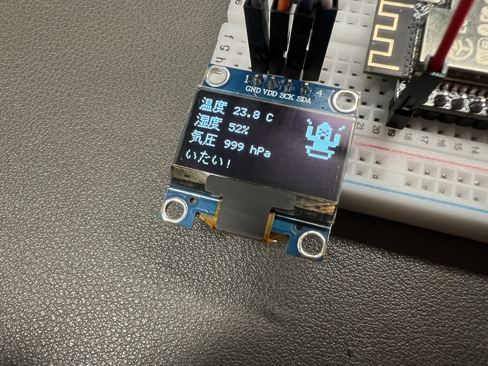
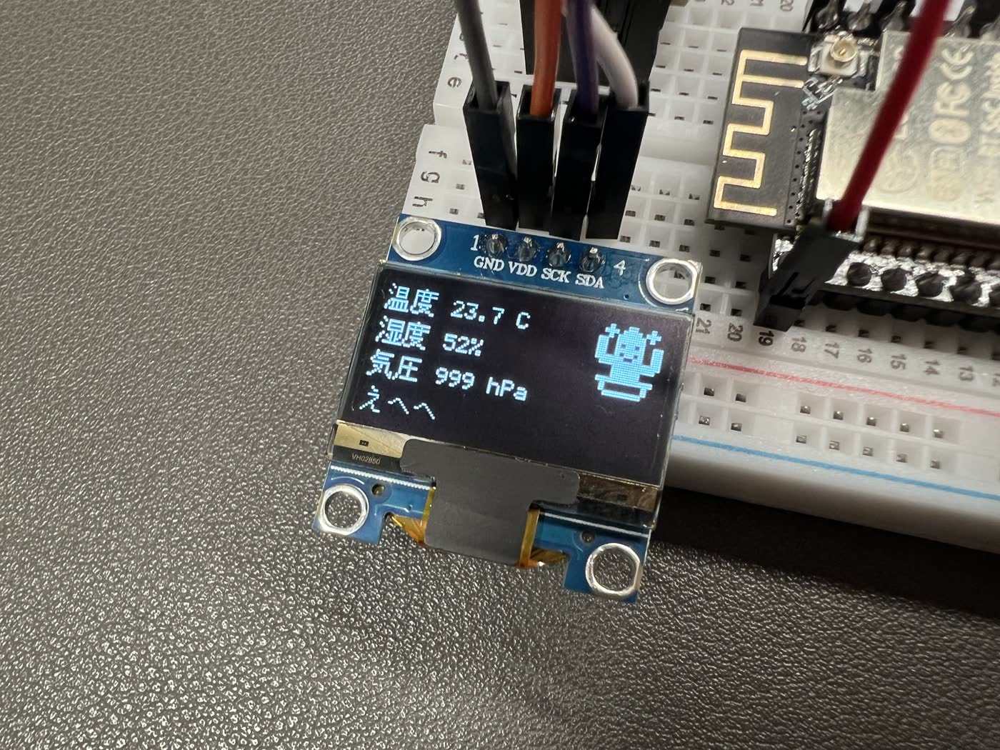
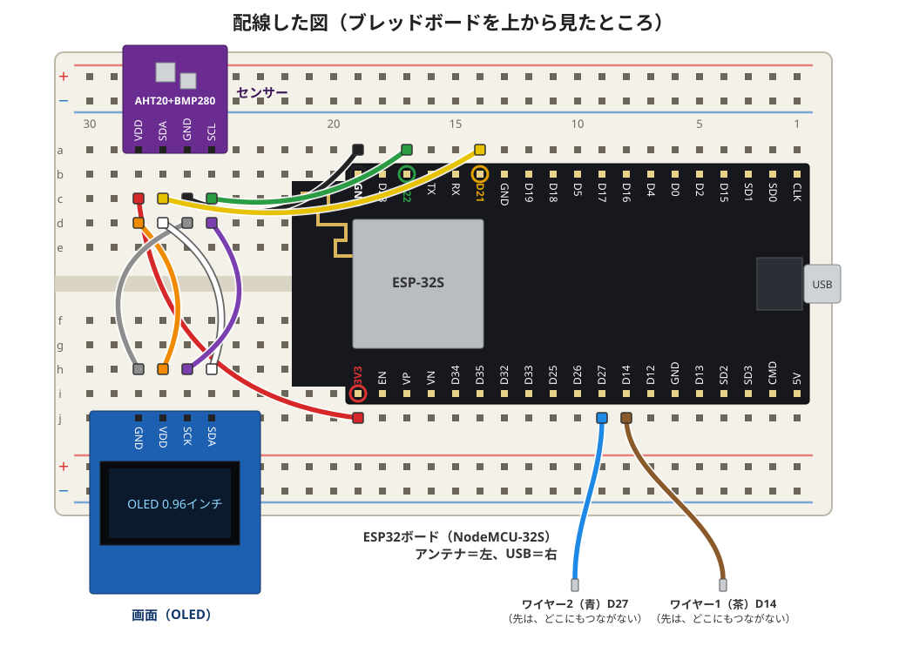
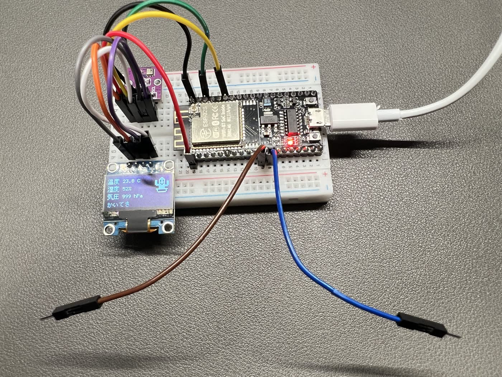
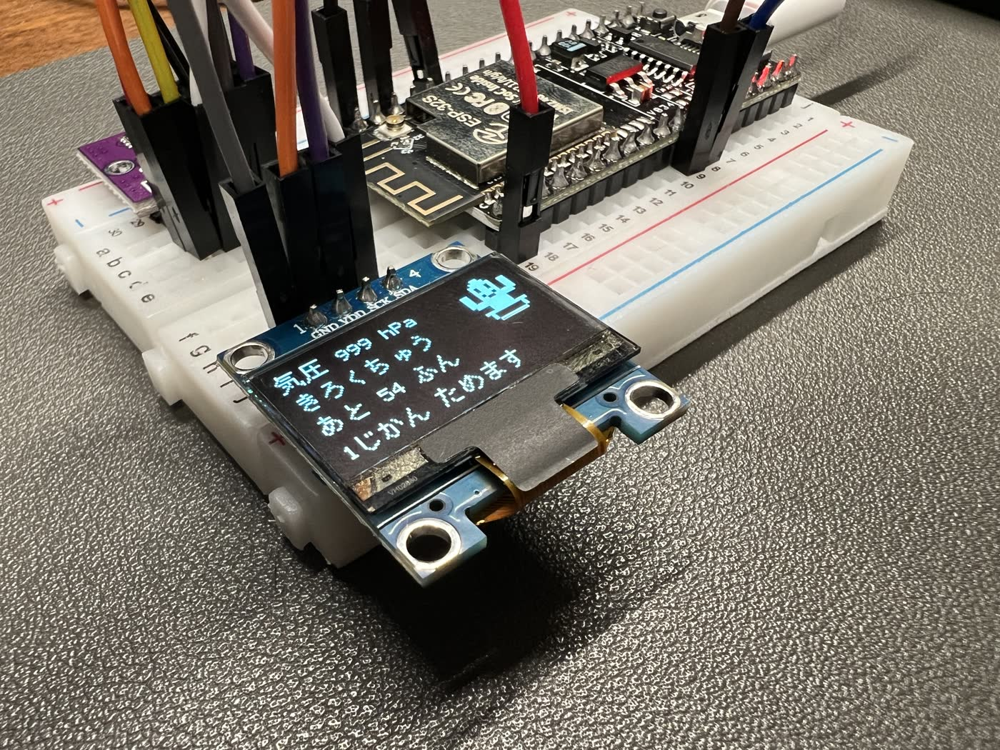
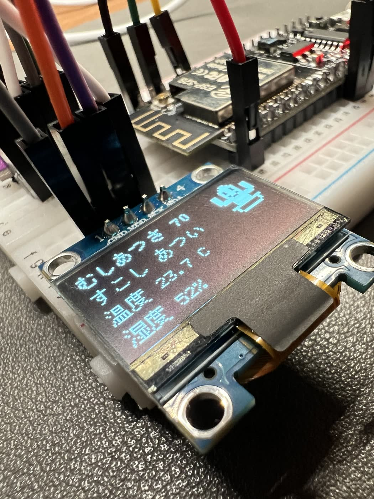
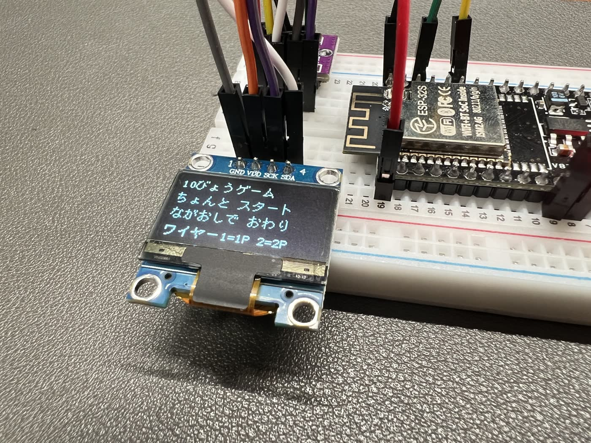

さわって あそぼう（タッチ版）
さぼてんきけいに、予備のワイヤー2本をたすだけ。ワイヤーの先をさわると、画面がかわります。さぼてんきくんを「なでる」ことも、10秒ゲームで親子対決することも、できます。
これは、おまけのステップです。まず、いつもの「さぼてんきけい」が動いてから、試してね。部品は、キットに入っているものだけで、できます。
できること
| さわる場所 | さわりかた | おこること |
|---|---|---|
| ワイヤー1 | ちょん | 画面がかわる（いつもの画面 → きあつの へんか → むしあつさ → 10秒ゲーム → もどる） |
| ワイヤー2 | ちょん | さぼてんきくんが「いたい！」（サボテンには、トゲがあるからね） |
| ワイヤー2 | ながく（1秒） | さぼてんきくんが「えへへ」（なでなで） |


1. ワイヤーをつなぐ
USBケーブルは、はずしてからね。ワイヤーを、1本ずつ、さします。
| ワイヤー | ESP32のピン | ブレッドボードの穴 |
|---|---|---|
| ワイヤー1（画面のきりかえ） | D14 | 8j |
| ワイヤー2（さぼてんきくん） | D27 | 9j |
- ワイヤーの、もう一方の先（金属の部分）は、どこにもつながず、あけておきます。ここを、さわります。
- 2本の先が、ふれあわないように、はなしておきます。
- ESP32のピンの名前は、ボードのはしに書いてあります。「配線の図」にも、D14とD27が、のっています。
- ワイヤーの先を、アルミホイルで巻くと、さわりやすくなります。（巻かなくても、だいじょうぶ）


2. プログラムを書き込む
タッチ版は、別のプログラムです。いつもの「さぼてんきけい」のプログラムとは、べつに、貼りつけて書き込みます。（書き込むと、いつものプログラムは、いったん消えます。もどすときは、プログラムのページから、もう一度、書き込みます）
- Arduino IDE で、「ファイル」→「新規スケッチ」を選び、はじめから書いてある文字を、ぜんぶ消す。
- 下の「タッチ版をコピーする」を押して、貼りつける。
- ボードとポートを選んで、→（書き込み）ボタンを押す。（くわしくは、書き込みのやりかた）名前は「sabotenkikei_touch」などで、保存する。
- 電源が入ったときは、ワイヤーの先に、さわらないでね。画面に「さわらないでね」と出ている間（2秒くらい）に、さわっていない時の「ようす」を、おぼえるからです。
タッチ版のプログラムを、ひらく
// さぼてんきけい タッチ版（ESP32 + AHT20/BMP280 + 0.96インチOLED）
//
// 出荷している「さぼてんきけい」に、タッチの機能を足した、おまけのプログラムです。
// ワイヤー2本（予備の2本）の先を、さわると、画面がかわります。
//
// このプログラムは Wi-Fi / Bluetooth を一切使いません（WiFi.h などを読み込んでいません）。
//
// 必要なライブラリ（さぼてんきけいと同じ）:
// 1. U8g2 (olikraus)
// 2. Adafruit BMP280 Library ※「依存ライブラリも入れますか？」→「すべてインストール」
//
// ボード設定: ツール → ボード → esp32 → 「ESP32 Dev Module」
//
// 配線（さぼてんきけいの配線に、ワイヤー2本をたす）:
// ESP32 3V3 → センサー VDD / OLED VDD
// ESP32 GND → センサー GND / OLED GND
// ESP32 GPIO21 → センサー SDA / OLED SDA
// ESP32 GPIO22 → センサー SCL / OLED SCK
// ESP32 GPIO14（D14）→ ワイヤー1（さわる場所①。画面の きりかえ）
// ESP32 GPIO27（D27）→ ワイヤー2（さわる場所②。さぼてんきくん）
// ワイヤーの、もう一方の先（金属の部分）を、さわります。ほかには、つなぎません。
//
// つかいかた:
// ① さわる場所① … ちょん、とさわると、画面がかわります。
// 「いつもの画面」→「きあつの へんか」→「むしあつさ」→ もどる
// ② さわる場所② … さぼてんきくんが、はんのうします。
// ちょん、とさわる → 「いたい！」（サボテンは トゲがあるからね）
// ながく（1びょう）さわる → 「えへへ」（なでなで）
// ③ 「10びょうゲーム」の画面（さわる場所①を、ちょんと さわって、4つめの画面へ）
// どちらかが ちょん、とさわる → 「よーい…」→「ドン!」で スタート
// さぼてんきくんが おどっている間、こころで 10びょうを かぞえる
// 「10びょう！」と思ったら、じぶんの ワイヤーを ちょん（1P=ワイヤー1、2P=ワイヤー2）
// 10びょうぴったりに ちかい ほうの かち。ドンの まえに さわると フライング。
// ながく（1.2びょう）さわる場所①を さわると、つぎの画面にもどる。
// ※ 電源を入れる時は、ワイヤーの先に、さわらないでください。
// （さわらない時の ようすを、おぼえるためです）
#include <Wire.h>
#include <U8g2lib.h>
#include <Adafruit_BMP280.h>
// =====================================================================
// かえてみよう！（ここから下を書きかえると、画面の表示がかわります）
// 書きかえたら、もう一度「書き込み」ボタン（→）をおしてね。
// =====================================================================
// ---- ① 数字をかえてみよう ----
const float JIMEJIME_LINE = 70; // 湿度（%）が これ以上で じめじめ
const float KARAKARA_LINE = 40; // 湿度（%）が これより下で からから
const unsigned long ANIME_MS = 500; // 絵の きりかえの間かく（ミリ秒）。50より小さくしないでね
// ---- ② タッチの ぐあいを かえてみよう ----
// さわったと 感じる、むずかしさです。0.3〜0.9 の間で。
// 小さいほど、ぎゅっと さわらないと 反応しません。
// 反応しすぎる時は 小さく、反応しない時は 大きくします。
const float TOUCH_RATIO = 0.6;
const unsigned long PET_MS = 1000; // これだけ さわり続けると「なでなで」（ミリ秒）
const unsigned long REACT_MS = 1500; // 顔が かわったままに なる 長さ（ミリ秒）
// ---- ③ 言葉をかえてみよう ----
// ひらがな・カタカナが おすすめ。むずかしい漢字は、画面に出ないことがあります。
const char *WORD_KAITEKI = "かいてき";
const char *WORD_JIMEJIME = "じめじめ";
const char *WORD_KARAKARA = "からから";
const char *WORD_ITAI = "いたい!";
const char *WORD_TERE = "えへへ";
// ---- ④ 10びょうゲームを かえてみよう ----
const int GAME_SEC = 10; // 何びょうを めざすか（5 や 15 に してみよう）
// ---- ⑤ 0と1で 絵をかえてみよう ----
// 1 が「光るドット」、0 が「光らないドット」です。1行に16こ、16行あります。
// 名前のさいごに 2 がついているのが、絵2 です。
// かいてき: にこにこ顔の さぼてんきくん
const char *MARK_KAITEKI[16] = {
"0000000110000000",
"0000001111000000",
"0000011111100000",
"0110010110100000",
"0110010110100110",
"0110011111100110",
"0110010110100110",
"0111111001100110",
"0011111111111110",
"0000011111111100",
"0000011111100000",
"0000011111100000",
"0011111111111100",
"0001000000001000",
"0001000000001000",
"0000111111110000",
};
// かいてき（絵2）
const char *MARK_KAITEKI2[16] = {
"0000000110000000",
"0000001111000000",
"0000011111100000",
"0000010110100110",
"0110010110100110",
"0110011111100110",
"0110010110100110",
"0110011001111110",
"0111111111111100",
"0011111111100000",
"0000011111100000",
"0000011111100000",
"0011111111111100",
"0001000000001000",
"0001000000001000",
"0000111111110000",
};
// じめじめ: じめじめ顔の さぼてんきくん
const char *MARK_JIMEJIME[16] = {
"0100000110000000",
"0011001111000110",
"0000011111101000",
"0011010110100000",
"0110010110101100",
"0110011111100110",
"0110010000100110",
"0111111111100110",
"0011111111111110",
"0000011111111100",
"0000011111100000",
"0000011111100000",
"0011111111111100",
"0001000000001000",
"0001000000001000",
"0000111111110000",
};
// じめじめ（絵2）
const char *MARK_JIMEJIME2[16] = {
"1000000110000000",
"0100001111000010",
"0000011111100100",
"0110011111100000",
"0110010110100110",
"0110011111100110",
"0110010000100110",
"0111111111100110",
"0011111111111110",
"0000011111111100",
"0000011111100000",
"0000011111100000",
"0011111111111100",
"0001000000001000",
"0001000000001000",
"0000111111110000",
};
// からから: からからで あつそうな さぼてんきくん
const char *MARK_KARAKARA[16] = {
"0000000110001000",
"0010001111000100",
"0100011111101000",
"0010011111100100",
"0100010110100000",
"0000011111111100",
"0011111001111110",
"0111110000100110",
"0110011111100110",
"0110011111100110",
"0110011111100000",
"0000011111100000",
"0011111111111100",
"0001000000001000",
"0001000000001000",
"0000111111110000",
};
// からから（絵2）
const char *MARK_KARAKARA2[16] = {
"0000000110000100",
"0100001111001000",
"0010011111100100",
"0100011111101000",
"0010010110100000",
"0000011111111100",
"0011111001111110",
"0111110110100110",
"0110011111100110",
"0110011111100110",
"0110011111100000",
"0000011111100000",
"0011111111111100",
"0001000000001000",
"0001000000001000",
"0000111111110000",
};
// いたい！: タッチして、びっくりした さぼてんきくん（絵1）
const char *MARK_ITAI[16] = {
"1000000110000001",
"0100001111000010",
"0000011111100000",
"0110010110100000",
"0110011001100110",
"0110010110100110",
"0110011001100110",
"0111111001100110",
"0011111111111110",
"0000011111111100",
"0000011111100000",
"0000011111100000",
"0011111111111100",
"0001000000001000",
"0001000000001000",
"0000111111110000",
};
// いたい！（絵2）
const char *MARK_ITAI2[16] = {
"0100000110000010",
"1000001111000001",
"0000011111100000",
"0110010110100000",
"0110011001100110",
"0110010110100110",
"0110011001100110",
"0111111001100110",
"0011111111111110",
"0000011111111100",
"0000011111100000",
"0000011111100000",
"0011111111111100",
"0001000000001000",
"0001000000001000",
"0000111111110000",
};
// えへへ: なでられて、うれしい さぼてんきくん（絵1）
const char *MARK_TERE[16] = {
"0001000110001000",
"0011101111011100",
"0001011111101000",
"0110011111100000",
"0110010110100110",
"0110011111100110",
"0110010110100110",
"0111111001100110",
"0011111111111110",
"0000011111111100",
"0000011111100000",
"0000011111100000",
"0011111111111100",
"0001000000001000",
"0001000000001000",
"0000111111110000",
};
// えへへ（絵2）
const char *MARK_TERE2[16] = {
"0000000110000000",
"0001001111001000",
"0000011111100000",
"0110011111100000",
"0110010110100110",
"0110011111100110",
"0110010110100110",
"0111111001100110",
"0011111111111110",
"0000011111111100",
"0000011111100000",
"0000011111100000",
"0011111111111100",
"0001000000001000",
"0001000000001000",
"0000111111110000",
};
// =====================================================================
// かえてみよう ここまで（ここから下は、なれてきたら読んでみよう）
// =====================================================================
// 0.96インチ OLED（SSD1306, 128x64, I2Cアドレス 0x3C）
U8G2_SSD1306_128X64_NONAME_F_HW_I2C display(U8G2_R0, U8X8_PIN_NONE);
Adafruit_BMP280 bmp;
const uint8_t AHT20_ADDR = 0x38;
bool bmpOk = false;
// 最後にはかった値
float temp = 0, humi = 0, pressure = 0;
bool ahtOk = false;
const unsigned long SENSOR_MS = 1000; // センサーを読む間かく（ミリ秒）
unsigned long lastSensorMs = 0;
bool firstRead = true;
int lastFrame = -1;
unsigned long lastDanceTick = 0;
bool dirty = true; // 画面をかきなおす
const int MARK_SIZE = 16; // 絵のたて・よこのドット数
const int MARK_SCALE = 2; // 1ドットを何倍で出すか（2 → 32x32ドット）
const int MARK_X = 128 - MARK_SIZE * MARK_SCALE; // 右はしにぴったり
const int MARK_Y = 4;
// ---- 画面の ばんごう ----
const int SCREEN_MAIN = 0; // いつもの画面
const int SCREEN_PRESSURE = 1; // きあつの へんか
const int SCREEN_MUSHI = 2; // むしあつさ
const int SCREEN_GAME = 3; // びょうゲーム
const int SCREEN_N = 4;
int screen = SCREEN_MAIN;
// ---- タッチの ばしょ（ワイヤーの先）----
const int TOUCH_PIN_1 = 14; // さわる場所①（GPIO14）
const int TOUCH_PIN_2 = 27; // さわる場所②（GPIO27）
const unsigned long LONG_MS = 1200; // ながく さわる とき の 長さ
struct Pad {
int pin;
float base; // さわっていない時の 値（きじゅん）
bool down; // いま さわっているか
int cnt; // ちょうし を みる ための かぞえ
unsigned long pendMs; // さわり はじめた とき
unsigned long downMs; // さわった ときこく
bool longFired;
bool pressedEdge; // いま さわった
bool releasedEdge; // いま はなした
bool longEdge; // いま ながく さわった
unsigned long heldMs; // はなした とき の、さわっていた 長さ
};
Pad pad1 = {TOUCH_PIN_1, 0, false, 0, 0, 0, false, false, false, false, 0};
Pad pad2 = {TOUCH_PIN_2, 0, false, 0, 0, 0, false, false, false, false, 0};
// ESP32 は、さわると 値が 小さくなる
float measureBase(int pin) {
long sum = 0;
for (int i = 0; i < 16; i++) {
sum += touchRead(pin);
delay(4);
}
return sum / 16.0f;
}
void padUpdate(Pad &p, unsigned long now) {
p.pressedEdge = false;
p.releasedEdge = false;
p.longEdge = false;
float v = (float)touchRead(p.pin);
bool raw = v < p.base * TOUCH_RATIO;
if (raw == p.down) {
p.cnt = 0;
// さわっていない間は、きじゅんを、ゆっくり なおす
if (!raw && v > p.base * 0.8f) p.base = p.base * 0.98f + v * 0.02f;
} else {
if (p.cnt == 0) p.pendMs = now;
p.cnt++;
if (p.cnt >= 3) { // 3回つづけて 同じ → きまり（ちらつき よけ）
p.down = raw;
p.cnt = 0;
if (raw) {
p.pressedEdge = true;
p.downMs = p.pendMs;
p.longFired = false;
} else {
p.releasedEdge = true;
p.heldMs = now - p.downMs;
}
}
}
if (p.down && !p.longFired && now - p.downMs >= LONG_MS) {
p.longFired = true;
p.longEdge = true;
}
}
// ---- 0と1の絵を、画面にかく（scale は 1ドットを 何倍で出すか）----
void drawMarkS(const char *const mark[], int x, int y, int scale) {
for (int row = 0; row < MARK_SIZE; row++) {
const char *line = mark[row];
for (int col = 0; col < MARK_SIZE && line[col] != '\0'; col++) {
if (line[col] == '1') {
display.drawBox(x + col * scale, y + row * scale, scale, scale);
}
}
}
}
void drawMark(const char *const mark[], int x, int y) {
drawMarkS(mark, x, y, MARK_SCALE);
}
// ---- AHT20（温度・湿度）をライブラリなしで読む ----
void ahtInit() {
delay(40);
Wire.beginTransmission(AHT20_ADDR);
Wire.write(0xBE);
Wire.write(0x08);
Wire.write(0x00);
Wire.endTransmission();
delay(10);
}
bool ahtRead(float &tempC, float &humi) {
Wire.beginTransmission(AHT20_ADDR);
Wire.write(0xAC);
Wire.write(0x33);
Wire.write(0x00);
if (Wire.endTransmission() != 0) return false; // つながっていない
delay(80);
if (Wire.requestFrom((uint8_t)AHT20_ADDR, (uint8_t)7) != 7) return false;
uint8_t d[7];
for (int i = 0; i < 7; i++) d[i] = Wire.read();
if (d[0] & 0x80) return false; // まだ測定中
uint32_t rawH = ((uint32_t)d[1] << 12) | ((uint32_t)d[2] << 4) | (d[3] >> 4);
uint32_t rawT = ((uint32_t)(d[3] & 0x0F) << 16) | ((uint32_t)d[4] << 8) | d[5];
humi = rawH * 100.0f / 1048576.0f;
tempC = rawT * 200.0f / 1048576.0f - 50.0f;
return true;
}
// ---- 気圧の きろく（1分に1回、3時間ぶん）----
const int HIST_N = 180;
const unsigned long HIST_MS = 60000; // 気圧をきろくする間かく（60000 = 1分）。ためすときは 1000 にすると、1分で「1じかん分」たまる
float histP[HIST_N];
int histHead = 0; // つぎに かく ばしょ
int histN = 0; // たまった かず
unsigned long lastHistMs = 0;
bool histStarted = false;
void histAdd(float p) {
histP[histHead] = p;
histHead = (histHead + 1) % HIST_N;
if (histN < HIST_N) histN++;
}
// k 分まえの きあつ（0 = いちばん あたらしい）
float histAgo(int k) {
int idx = (histHead - 1 - k + HIST_N * 2) % HIST_N;
return histP[idx];
}
// ---- さぼてんきくんの はんのう ----
int reactKind = 0; // 0:なし 1:いたい 2:えへへ
unsigned long reactUntil = 0;
bool reacting(unsigned long now) {
return reactKind != 0 && (pad2.down || now < reactUntil);
}
// ---- 10びょうゲーム ----
const int G_IDLE = 0; // まっている
const int G_READY = 1; // よーい…
const int G_COUNT = 2; // かぞえ中（さぼてんきくんが おどる）
const int G_RESULT = 3; // けっか
int gState = G_IDLE;
bool gNeedRelease = true;
unsigned long gEnterMs = 0;
unsigned long gReadyUntil = 0;
unsigned long gT0 = 0;
unsigned long gResultAt = 0;
float gTime[2] = {0, 0};
bool gDone[2] = {false, false};
bool gFly[2] = {false, false};
int gWinner = -1; // 0:1P 1:2P -1:ひきわけ/なし
void gameEnter(unsigned long now) {
gState = G_IDLE;
gNeedRelease = true;
gEnterMs = now;
dirty = true;
}
void gameFinish(unsigned long now) {
gState = G_RESULT;
gResultAt = now;
gWinner = -1;
if (gFly[0] != gFly[1]) {
gWinner = gFly[0] ? 1 : 0; // フライング したほうが まけ
} else if (!gFly[0]) {
float d0 = gDone[0] ? fabsf(gTime[0] - GAME_SEC) : 1000;
float d1 = gDone[1] ? fabsf(gTime[1] - GAME_SEC) : 1000;
if (d0 < d1) gWinner = 0;
else if (d1 < d0) gWinner = 1;
}
dirty = true;
}
void nextScreen(unsigned long now) {
screen = (screen + 1) % SCREEN_N;
if (screen == SCREEN_GAME) gameEnter(now);
dirty = true;
}
void gameUpdate(unsigned long now) {
if (gState == G_IDLE || gState == G_RESULT) {
if (gNeedRelease) {
if (!pad1.down && !pad2.down && now - gEnterMs > 600) gNeedRelease = false;
return;
}
if (pad1.longEdge) { // ながく さわる → つぎの画面へ
nextScreen(now);
return;
}
}
if (gState == G_IDLE) {
// ちょん、と さわって はなす → スタート
if ((pad1.releasedEdge && pad1.heldMs < LONG_MS) || (pad2.releasedEdge && pad2.heldMs < LONG_MS)) {
gState = G_READY;
gReadyUntil = now + random(1500, 3500); // 1.5〜3.5びょう まつ
gDone[0] = gDone[1] = false;
gFly[0] = gFly[1] = false;
dirty = true;
}
} else if (gState == G_READY) {
if (pad1.pressedEdge) gFly[0] = true; // ドンの まえに さわった → フライング
if (pad2.pressedEdge) gFly[1] = true;
if (gFly[0] || gFly[1]) {
gameFinish(now);
} else if (now >= gReadyUntil) {
gState = G_COUNT;
gT0 = now; // ここから 10びょう
dirty = true;
}
} else if (gState == G_COUNT) {
if (pad1.pressedEdge && !gDone[0]) { gTime[0] = (pad1.downMs - gT0) / 1000.0f; gDone[0] = true; }
if (pad2.pressedEdge && !gDone[1]) { gTime[1] = (pad2.downMs - gT0) / 1000.0f; gDone[1] = true; }
if ((gDone[0] && gDone[1]) || now - gT0 > (unsigned long)GAME_SEC * 2000UL + 1000UL) gameFinish(now);
} else if (gState == G_RESULT) {
// 2びょう たってから、ちょん、と さわる → もういちど
if (now - gResultAt > 2000 &&
((pad1.releasedEdge && pad1.heldMs < LONG_MS) || (pad2.releasedEdge && pad2.heldMs < LONG_MS))) {
gState = G_IDLE;
gNeedRelease = true;
gEnterMs = now;
dirty = true;
}
}
}
// ---- 画面に、ぜんぶをかく ----
void drawSensorError() {
display.drawUTF8(0, 13, "センサーが");
display.drawUTF8(0, 29, "つながって");
display.drawUTF8(0, 62, "いません");
}
void drawGame(unsigned long now, int frame) {
char line[40];
if (gState == G_IDLE) {
snprintf(line, sizeof(line), "%dびょうゲーム", GAME_SEC);
display.drawUTF8(0, 13, line);
display.drawUTF8(0, 29, "ちょんと スタート");
display.drawUTF8(0, 45, "ながおしで おわり");
display.drawUTF8(0, 62, "ワイヤー1=1P 2=2P");
} else if (gState == G_READY) {
display.drawUTF8(0, 29, "よーい…");
} else if (gState == G_COUNT) {
// おどる さぼてんきくん（3ばいの おおきさ）
int phase = (now / 125) % 4;
static const int dxs[4] = {-5, 0, 5, 0};
static const int dys[4] = {0, 2, 0, 2}; // 下の文字（y=51〜）に かぶらない 高さ
const char *const *m;
switch (phase) {
case 0: m = MARK_KAITEKI; break;
case 1: m = MARK_TERE; break;
case 2: m = MARK_KAITEKI2; break;
default: m = MARK_TERE2; break;
}
drawMarkS(m, 40 + dxs[phase], 0 + dys[phase], 3); // 16x16 の 3ばい = 48ドット。y=0〜50
if (now - gT0 < 700) display.drawUTF8(0, 62, "ドン!");
else display.drawUTF8(0, 62, "こころで かぞえてね");
} else {
// けっか
const char *const *m = nullptr;
if (gWinner >= 0) m = frame ? MARK_TERE2 : MARK_TERE;
else if (gFly[0] || gFly[1]) m = frame ? MARK_ITAI2 : MARK_ITAI;
if (m) drawMark(m, MARK_X, MARK_Y);
for (int p = 0; p < 2; p++) {
int y = (p == 0) ? 13 : 29;
if (gFly[p]) snprintf(line, sizeof(line), "%dP フライング", p + 1);
else if (gDone[p]) snprintf(line, sizeof(line), "%dP %.2fびょう", p + 1, gTime[p]);
else snprintf(line, sizeof(line), "%dP ---", p + 1);
display.drawUTF8(0, y, line);
}
if (gWinner == 0) display.drawUTF8(0, 45, "1Pの かち!");
else if (gWinner == 1) display.drawUTF8(0, 45, "2Pの かち!");
else display.drawUTF8(0, 45, "ひきわけ");
snprintf(line, sizeof(line), "%dびょう ちかい ほう", GAME_SEC);
display.drawUTF8(0, 62, line);
}
}
void drawScreen(unsigned long now, int frame) {
char line[40];
display.clearBuffer();
display.setFont(u8g2_font_b12_t_japanese2);
if (screen == SCREEN_GAME) {
drawGame(now, frame);
display.sendBuffer();
return;
}
// 顔の絵と 言葉を えらぶ
const char *word = nullptr;
const char *const *mark = nullptr;
bool react = reacting(now);
if (ahtOk) {
if (humi >= JIMEJIME_LINE) {
word = WORD_JIMEJIME;
mark = frame ? MARK_JIMEJIME2 : MARK_JIMEJIME;
} else if (humi < KARAKARA_LINE) {
word = WORD_KARAKARA;
mark = frame ? MARK_KARAKARA2 : MARK_KARAKARA;
} else {
word = WORD_KAITEKI;
mark = frame ? MARK_KAITEKI2 : MARK_KAITEKI;
}
}
if (react) {
if (reactKind == 1) {
word = WORD_ITAI;
mark = frame ? MARK_ITAI2 : MARK_ITAI;
} else {
word = WORD_TERE;
mark = frame ? MARK_TERE2 : MARK_TERE;
}
}
if (mark) drawMark(mark, MARK_X, MARK_Y);
if (screen == SCREEN_MAIN) {
if (ahtOk) {
snprintf(line, sizeof(line), "温度 %.1f C", temp);
display.drawUTF8(0, 13, line);
snprintf(line, sizeof(line), "湿度 %.0f%%", humi);
display.drawUTF8(0, 29, line);
display.drawUTF8(0, 62, word);
} else {
drawSensorError();
if (react) display.drawUTF8(0, 62, word);
}
if (bmpOk) {
snprintf(line, sizeof(line), "気圧 %.0f hPa", pressure);
display.drawUTF8(0, 45, line);
} else {
display.drawUTF8(0, 45, "気圧 ---");
}
} else if (screen == SCREEN_PRESSURE) {
if (!bmpOk) {
display.drawUTF8(0, 13, "気圧 ---");
display.drawUTF8(0, 29, "センサーを");
display.drawUTF8(0, 45, "たしかめてね");
} else {
snprintf(line, sizeof(line), "気圧 %.0f hPa", pressure);
display.drawUTF8(0, 13, line);
if (histN >= 60) {
float d1 = pressure - histAgo(59);
snprintf(line, sizeof(line), "1じかん %+.1f", d1);
display.drawUTF8(0, 29, line);
if (d1 <= -1.0f) display.drawUTF8(0, 45, "さがってる");
else if (d1 >= 1.0f) display.drawUTF8(0, 45, "あがってる");
else display.drawUTF8(0, 45, "かわらない");
if (histN >= HIST_N && pressure - histAgo(HIST_N - 1) <= -3.0f) display.drawUTF8(0, 62, "てんきが くずれそう");
else if (d1 <= -2.0f) display.drawUTF8(0, 62, "ぐんぐん さがってる");
} else {
display.drawUTF8(0, 29, "きろくちゅう");
snprintf(line, sizeof(line), "あと %d ふん", 60 - histN);
display.drawUTF8(0, 45, line);
display.drawUTF8(0, 62, "1じかん ためます");
}
}
} else { // SCREEN_MUSHI
if (!ahtOk) {
drawSensorError();
} else {
// ふかい しすう（蒸し暑さの めやす）
float di = 0.81f * temp + 0.01f * humi * (0.99f * temp - 14.3f) + 46.3f;
snprintf(line, sizeof(line), "むしあつさ %.0f", di);
display.drawUTF8(0, 13, line);
const char *w;
if (di < 60) w = "さむい";
else if (di < 65) w = "ちょうどいい";
else if (di < 70) w = "かいてき";
else if (di < 75) w = "すこし あつい";
else if (di < 80) w = "あつい";
else w = "とても あつい";
display.drawUTF8(0, 29, w);
snprintf(line, sizeof(line), "温度 %.1f C", temp);
display.drawUTF8(0, 45, line);
snprintf(line, sizeof(line), "湿度 %.0f%%", humi);
display.drawUTF8(0, 62, line);
}
}
display.sendBuffer();
}
void setup() {
Serial.begin(115200);
Wire.begin(21, 22); // SDA=21, SCL=22
display.begin();
display.enableUTF8Print();
display.setFont(u8g2_font_b12_t_japanese2);
// はじめの画面（2秒）。この間に、タッチの きじゅん（さわっていない時の 値）を はかる
display.clearBuffer();
display.drawUTF8(0, 36, "さぼてんきけい");
drawMark(MARK_KAITEKI, MARK_X, 16);
display.drawUTF8(0, 62, "さわらないでね");
display.sendBuffer();
ahtInit();
// 気圧センサー BMP280 のI2Cアドレスは 0x76 か 0x77（商品により違う）
bmpOk = bmp.begin(0x76) || bmp.begin(0x77);
if (!bmpOk) Serial.println("BMP280 が見つかりません（配線を確認）");
pad1.base = measureBase(pad1.pin);
pad2.base = measureBase(pad2.pin);
Serial.printf("タッチの きじゅん 1=%.0f 2=%.0f\n", pad1.base, pad2.base);
delay(1500);
}
void loop() {
unsigned long now = millis();
padUpdate(pad1, now);
padUpdate(pad2, now);
// ---- さわる場所① ----
if (screen != SCREEN_GAME && pad1.pressedEdge) nextScreen(now);
// ---- さわる場所②（さぼてんきくんを さわる）----
if (screen != SCREEN_GAME) {
if (pad2.pressedEdge) {
reactKind = 1; // いたい!
reactUntil = now + REACT_MS;
dirty = true;
}
if (pad2.down && reactKind == 1 && now - pad2.downMs >= PET_MS) {
reactKind = 2; // なでなで → えへへ
dirty = true;
}
if (pad2.down) reactUntil = now + REACT_MS;
if (pad2.releasedEdge) {
reactUntil = now + REACT_MS;
dirty = true;
}
if (reactKind != 0 && !pad2.down && now >= reactUntil) {
reactKind = 0;
dirty = true;
}
} else {
reactKind = 0;
gameUpdate(now);
}
// ---- センサー（ゲームの かぞえ中は、読まない。タッチの ときこくが ずれるから）----
bool gameBusy = (screen == SCREEN_GAME && (gState == G_READY || gState == G_COUNT));
bool sensorTime = !gameBusy && (firstRead || (now - lastSensorMs >= SENSOR_MS));
if (sensorTime) {
ahtOk = ahtRead(temp, humi);
if (bmpOk) pressure = bmp.readPressure() / 100.0f;
Serial.printf("温度=%.1f 湿度=%.0f タッチ値 1=%u 2=%u\n", temp, humi, touchRead(pad1.pin), touchRead(pad2.pin));
lastSensorMs = now;
firstRead = false;
// 気圧を 1分ごとに きろく
if (bmpOk && (!histStarted || now - lastHistMs >= HIST_MS)) {
histAdd(pressure);
lastHistMs = now;
histStarted = true;
}
}
// 絵は、ANIME_MS ごとに、絵1と絵2を入れかえる
unsigned long animeMs = (ANIME_MS < 50) ? 50 : ANIME_MS;
int frame = (now / animeMs) % 2;
bool dancing = (screen == SCREEN_GAME && gState == G_COUNT);
unsigned long danceTick = now / 125;
if (dirty || sensorTime || frame != lastFrame || (dancing && danceTick != lastDanceTick)) {
lastFrame = frame;
lastDanceTick = danceTick;
dirty = false;
drawScreen(now, frame);
}
delay(5);
}
3. 画面を、きりかえてみよう
ワイヤー1を、ちょんとさわるたびに、画面がかわります。
- いつもの画面：温度・湿度・気圧と、さぼてんきくん。
- きあつの へんか：気圧の、1時間の変わりかた。ぐんぐん下がると「てんきが くずれそう」と出ます。（気圧は、1分に1回、ボードの中に、記録します。1時間たつまでは「きろくちゅう」と出ます）
- むしあつさ：温度と湿度から、蒸し暑さの数字を出します（「不快指数」という、よく使われる計算です）。「ちょうどいい」「あつい」などと出ます。
- 10秒ゲーム：下を見てね。

| むしあつさの数字 | 画面の言葉 |
|---|---|
| 60より小さい | さむい |
| 60〜65 | ちょうどいい |
| 65〜70 | かいてき |
| 70〜75 | すこし あつい |
| 75〜80 | あつい |
| 80以上 | とても あつい |
数字は、めやすです。人によって、感じかたが、ちがいます。

4. 10秒ゲーム（親子で対決！）
「10秒」を、心の中で数えて、ぴったりに近い方が勝ちです。ワイヤー1が「1P」、ワイヤー2が「2P」です。

- ワイヤー1を、ちょんとさわって、10秒ゲームの画面にする。（ワイヤー1を、ながくさわると、つぎの画面に、もどります）
- どちらかが、ちょんとさわると、「よーい…」と出ます。
- 少し待つと、「ドン！」。ここから、さぼてんきくんが、おどりはじめます。数字は出ません。心の中で、10秒を数えます。
- 「10秒だ！」と思ったときに、自分のワイヤーを、ちょんとさわります。
- 2人がさわると、ぴったり10秒に近い方の勝ちです。くわしい秒数も、出ます。
- 「ドン！」の前に、さわってしまうと、フライングで、負けになります。
- 1人で遊ぶときは、20秒たつと、けっかが出ます。
- けっかの画面で、2秒たってから、ちょんとさわると、もういちど遊べます。
- かぞえている間は、さぼてんきくんの動きを、見ないほうが、じょうずに数えられるかもね。
さわっても反応しない・反応しすぎるとき
- 反応しない：ワイヤーの先の金属を、指のはらで、しっかりさわります。指が、かわいているときは、少しだけ、しめらせると、反応しやすくなります。
- さわっていないのに、反応する：2本のワイヤーが、ふれあっていないか、たしかめます。電源を入れ直します（このとき、さわらない）。
- それでも、うまくいかないときは、プログラムの先頭の
TOUCH_RATIOの数字を、かえてみます。反応しすぎる時は 小さく、反応しない時は 大きく（0.3〜0.9の間）。 - 電源（パソコン、スマホ用のUSB充電器）や、まわりの様子で、さわりごこちが、変わることがあります。
かえてみよう
PET_MS：「なでなで」になるまでの、長さ（ミリ秒）。WORD_ITAI・WORD_TERE：画面に出る言葉。MARK_ITAI・MARK_TERE：「いたい！」と「えへへ」の絵（0と1で、かきかえられます）。GAME_SEC：ゲームの秒数。10を、5や15に、してみよう。
気をつけること
ワイヤーの先は、ESP32のピンにつながっています。さわるのは、ワイヤーの先だけにして、ボードや、ほかの部品に、手がふれないようにします。さわるときは、USBの電源は、つないだままで、だいじょうぶです（電気は、とても小さいです）。ただし、ぬれた手でさわったり、ほかの金属をつないだりしないでね。